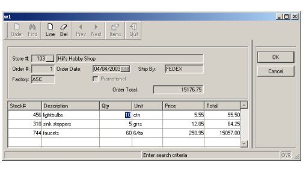

Summary:
The example discussed in this chapter is designed for the input of order information (headers and order lines), illustrating a typical master-detail relationship. The form used by the example contains fields from both the orders and items tables in the custdemo database.

Since there are multiple items associated with a single order, the rows from the items table are stored in a program array and displayed in a table container on the form. Most of the functionality to query/add/update/delete has been covered in previous chapters; this chapter will focus on the master/detail form and the unique features of the corresponding program.
Note: This type of relationship can also be handled with multiple dialogs, as shown in Chapter 13.
The BDL modules and forms used by the application in this chapter are compiled/linked by using a Makefile. This file is interpreted by the 'make' utility, which is a well-known tool to build large programs based on multiple sources and forms.
The make utility reads the dependency rules defined in the Makefile for each program component, and executes the commands associated with the rules.
This section only describes the Makefile used in this example. For more details about Makefiles, see the make utility documentation.
| Makefile |
|
Notes:
01 defines the 'all' dependency rule that
will be executed by default, and depends from the rule 'orders'
described on line
31. You execute this rule with 'make all', or 'make'
since this is the first rule in the Makefile.03 and 04 define a
dependency to compile the orders.4gl module into orders.42m.
The file on the left (orders.42m) depends from the file on
the right (orders.4gl), and the command to be executed is fglcomp
-M orders.4gl.06 and 07 define a
dependency to compile the orderform.per form.09 and 10 define a
dependency to compile the custlist.4gl module.12 and 13 define a
dependency to compile the custlist.per form.15 and 16 define a
dependency to compile the stocklist.4gl module.18 and 19 define a
dependency to compile the stocklist.per form.21 thru 24 define the list of compiled modules, used in the global 'orders'
dependency rule.26 thru 29 define the list of compiled form files, used in the global 'orders'
dependency rule.31 and 32 is the
global 'orders' dependency rule, defining modules or form files to
be created.34 and 35 define a
rule and command to execute the program. You execute this rule with
'make run'.37 and 38 define a
rule and command to clean the directory. You execute this rule with
'make clean'.The custlist.4gl module defines a 'zoom' module, to let the user select a customer from a list. The module could be re-used for any application that requires the user to select a customer from a list.
This module uses the custlist.per form and is typical list handling using the DISPLAY ARRAY statement, as discussed in Chapter 07. The display_custlist() function in this module returns the customer id and the name. See the custlist.4gl source module for more details.
In the application illustrated in this chapter, the main module orders.4gl will call the display_custlist() function to retrieve a customer selected by the user.
01ON ACTION zoom102CALL display_custlist() RETURNING id, name03IF (id > 0) THEN04...
The stocklist.4gl module defines a 'zoom' module, to let the user select a stock item from a list. This module uses the stocklist.per form and is typical list handling using the DISPLAY ARRAY statement, as discussed in Chapter 07. See the stocklist.4gl source module for more details.
The main module orders.4gl will call the display_stocklist() function of the stocklist.4gl module to retrieve a stock item selected by the user.
The function returns the stock item id only:
01ON ACTION zoom202LET id = display_stocklist()03IF (id > 0) THEN04...
The form specification file orderform.per defines a form for the orders program, and displays fields containing the values of a single order from the orders table. The name of the store is retrieved from the customer table, using the column store_num, and displayed.
A screen array displays the associated rows from the items table. Although order_num is also one of the fields in the items table, it does not have to be included in the screen array or in the screen record, since the order number will be the same for all the items displayed for a given order. For each item displayed in the screen array, the values in the description and unit columns from the stock table are also displayed.
The values in FORMONLY fields are not retrieved from a database; they are calculated by the BDL program based on the entries in other fields. In this form FORMONLY fields are used to display the calculations made by the BDL program for item line totals and the order total.
This form uses some of the attributes that can be assigned to fields in a form. See Form Specification Files Attributes for a complete list of the available attributes.
| Form orderform.per |
|
03 thru 16 define
a TOOLBAR section
with typical actions.23 and 48
The field f02 is a LABEL,
allowing no editing. It displays the customer name associated
with the orders store number19 and 49
Field f03 is the order number from the orders
table.25 and
53 The field f07 is a CHECKBOX
displaying the values of the column promo in the orders
table. The box will appear checked if the value in the column
is "Y", and unchecked if the value is "N".26 and
61 The field f14 is a FORMONLY
field This field displays the order total calculated by the BDL program
logic.30 thru
38 describe the TABLE
container for the screen array.33, 56
and 58 The fields f09 and f11
are LABELS,
and display the description and unit of measure for the items
stock number. 33 and
60 the field f13 is a LABEL
and FORMONLY.
This field displays the line total calculated for each line in the
screen array.42 thru 44 The TABLES
statement includes all the database tables that are listed for
fields in the Attributes section of the form.47 The attribute REQUIRED
forces the user to enter data in the field during an INPUT
statement. 51 The attribute UPSHIFT
makes the runtime system convert lowercase letters to uppercase
letters, both on the screen display and in the program variable that
stores the contents of this field.65 The screen record
includes the names of all the fields shown in the screen array. Much of the functionality is identical to that in earlier programs. The query/add/delete/update of the orders table would be the same as the examples in Chapter 4 and Chapter 6 . Only append and query are included in this program, for simplicity. The add/delete/update of the items table is similar to that in Chapter 8. The complete orders program is outlined below, with examples of any new functionality.
This program block contains the menu for the Orders program.
| MAIN program block (orders.4gl) |
|
Notes:
03
thru
11
define a record with fields
for all the columns in the orders table, as well as store_name
from the customer table.12
through
19
define a dynamic array
with fields for all the columns in the items table, as well
as quantity and unit from the stock table, and
a calculated field line_total.21 thru
33 define constants to hold the
program messages. This centralizes the definition of the messages,
which can be used in any function in the module.44 thru
65 define the main menu of the application.46 is executed before the menu is displayed; it
calls the setup_actions function to disable navigation and
item management actions by default. The DIALOG predefined object is
passed as the first parameter to the function. 47 thru 56
perform the 'add' action to create a new order. The order_new
function is called, and if it returns TRUE, the items_inpupd function
is called to allow the user to enter items for the new order. Menu actions are enabled/disabled depending
on the result of the operation, using the setup_actions
function.. 57 thru 61
perform the 'find' action to search for orders in the database. The order_query
function is called and menu actions are enabled/disabled depending
on the result of the operation, using the setup_actions
function.. 62 thru 65 handle
navigation in the order list after a search. Function order_fetch_rel
is used to fetch the previous or next record.67 calls the function items_inpupd to allow
the user to edit the items associated with the displayed order.72 closes the window before leaving the program.
This function is used by the main menu to enable or disable actions based on the context.
| Function setup_actions (orders.4gl) |
|
Notes:
01 Three parameters are passed to the function:
- d - the predefined Dialog object
- has_order - if the value is TRUE, indicates that there is a new or existing order selected.
- query_ok - if the value is TRUE, indicates that the search for orders was successful.
04 and
05 use the ui.Dialog.setActionActive
method to enable or disable 'next' and 'previous'
actions based on the value of query_ok, which indicates
whether the search for orders was
successful.06 uses the same method to enable the 'getitems' action
based on the value of has_order, which indicates whether there is an order
currently selected. This function handles the input of an order record.
| Function order_new (orders.4gl) |
|
Notes:
06 and
11 execute a SELECT to get a new order number
from the database; if no rows are found, the order number is
initialized to 1.14 thru
47 use the INPUT interactive dialog statement to
let the user input the order data.25 thru 29
the BEFORE INPUT block initializes some members of the order_rec
record, as default values for input.31 thru 38
the ON CHANGE block on the store_num field retrieves the
customer name for the changed store_num from the customer table, and
stores it in the store_name field. If the customer
doesn't exist in the customer table, an error message displays.40 thru 45
implement the code to open the zoom window of the store_num
BUTTONEDIT field, when the action zoom1 is triggered. The
function display_custlist in the custlist.4gl
module allows the user to select a customer from a list.
The action zoom1 is enabled during the INPUT statement only.56 calls the order_insert
function to perform the INSERT SQL statement.This function inserts a new record in the orders database table.
| Function order_insert (orders.4gl) |
|
Notes:
03 thru
19 implement the INSERT SQL statement to
create a new row in the orders table.21 thru
25 handle potential SQL errors, and display a
message and return FALSE if the insert was not successful..28 and
29 display a message and return TRUE in case of
success.This function allows the user to enter query criteria for the orders table. It calls the function order_select to retrieve the rows from the database table.
| Function order_query (orders.4gl) |
|
Notes:
08 thru
22 The CONSTRUCT
statement allows the user to query on specific fields,
restricting the columns in the orders table that can be used
for query criteria.15 thru
20 handle the 'zoom1' action to let
the user pick a customer from a list. The function display_custlist
is called, it returns the customer number and name.31 the query criteria stored in the variable
where_clause is passed to the function order_select. TRUE or FALSE is returned from
the order_select function. This function retrieves the row from the orders table, and is designed to be re-used each time a row is needed. If the retrieval of the row from the orders table is successful, the function items_fetch is called to retrieve the corresponding rows from the items table.
| Function fetch_order (orders.4gl) |
|
Notes:
05 When the parameter passed to this function and
stored in the variable
p_fetch_flag is 1, the FETCH
statement retrieves the next row from the orders table.07 When the parameter passed to this function and
stored in p_fetch_flag is not 1, the FETCH
statement retrieves the previous row from the orders table.10 thru 12 return
FALSE if no row was found..14 uses DISPLAY
BY NAME to display the record order_rec.15 calls the function items_fetch, to fetch
all order lines. 16 returns TRUE indicating the fetch of the order
was successful.This function creates the SQL statement for the query and the corresponding cursor to retrieve the rows from the orders table. It calls the function fetch_order.
| Function order_select (orders.4gl) |
|
Notes:
05 thru
14 contain the text of the SELECT
statement with the query criteria contained in the variable where_clause.16 declares a SCROLL CURSOR
for the SELECT statement stored in
the variable sql_text.17 opens the SCROLL CURSOR.18 thru
22 call the function order_fetch, passing
a parameter of 1 to fetch the next row, which in this case will be
the first one. If the fetch is not successful, FALSE is returned.24 returns TRUE, indicating the fetch was
successful.This function calls the function order_fetch to retrieve the rows in the database; the parameter p_fetch_flag indicates the direction for the cursor movement. If there are no more records to be retrieved, a message is displayed to the user.
| Function order_fetch_rel |
|
Notes:
05 calls the function order_fetch,
passing the variable p_fletch_flag to indicate the direction
of the cursor.07 displays a message to
indicate that the cursor is at the bottom of the result set.09 displays a message to
indicate that the cursor is at the top of the result set.This function calculates the total price for all of the items contained on a single order.
| Function order_total (orders.4gl) |
|
Notes:
07 thru
11 contain a FOR
loop adding the values of line_total from each item in the
program array arr_items, to calculate the total price of the
order and store it in the variable order_total. 14 displays the value of order_total on the form.This function closes the cursor used to select orders from the database.
| Function order_close (orders.4gl) |
|
Notes:
03 closes the order_curs cursor. The
statement is surrounded by WHENEVER ERROR, to trap errors if the
cursor is not open.This function retrieves the rows from the items table that match the value of order_num in the order currently displayed on the form. The description and unit values are retrieved from the stock table, using the column stock_num. The value for line_total is calculated and retrieved. After displaying the items on the form, the function order_total is called to calculate the total price of all the items for the current order.
| Function items_fetch (orders.4gl) |
|
Notes:
02 defines a variable item_cnt to hold the
array count.16 thru
25 declare a cursor
for the SELECT
statement to retrieve the rows from the items table that have
the same order number as the value in the order_num field of
the program record order_rec.
The description and unit values are retrieved from the
stock table, using the column stock_num.
The value for line_total is calculated.29 thru 32 the FOREACH
statement loads the dynamic array
arr_items.33 releases the memory associated with the
cursor items_curs, which is no longer needed.35 calls the items_show function to display
the order lines to the form.36 calls the function order_total to
calculate the total price of the items on the order.This function displays the line items for the order in the screen array and returns immediately.
| Function items_show (orders.4gl) |
|
Notes:
02 executes a DISPLAY
ARRAY statement with the program array containing the line
items.03 and 04
exit the instruction before control is turned over to the user.This function contains the program logic to allow the user to input a new row in the arr_items array, or to change or delete an existing row.
| Function items_inpupd |
|
Notes:
08 uses the getLength built-in
function to determine the number of rows in the array arr_items.9 thru
60 contain the INPUT
ARRAY statement. 12 and 14 use a BEFORE
ROW clause to store the index of the current row of the array in
the variable curr_pa. We also set the opflag flag to
"U", in order to indicate we are in update mode.16 thru
18 use a BEFORE
INSERT clause to set the value of opflag to
"I" if the current operation is an Insert of a new row in
the array. Line
18 sets a default value for the quantity.20 thru
22 An AFTER INSERT
clause calls the item_insert function to add
the row to the database table, passing the index of the current row
and calls the items_line_total function, passing
the index of the current row.24 thru
25 use a BEFORE
DELETE clause, to call the function item_delete, passing
the index of the current row.27 thru
29 contain an ON
ROW CHANGE clause to detect row modification. The item_update
function and the items_line_total function are called, passing the
index of the current row.31 thru 34 use a BEFORE
FIELD clause to prevent entry in the stock_num field if the
current operation is an Update of an existing row.36 thru 44 implement
the code for the 'zoom2' action, opening a list from the stock
table for
selection. 46 thru
52 use an ON
CHANGE clause to check whether the stock number for a new record
that was entered in the field stock_num exists in the stock
table.62 uses the getLength built-in
function to determine the number of rows in the array after the INPUT ARRAY statement has
terminated.63 calls the function order_total, passing
the number of rows in the array.65 thru
67 re-set the INT_FLAG
to TRUE if the user has interrupted the INPUT statement.This function calculates the value of line_total for any new rows that are inserted into the arr_items array.
| Function items_line_total |
|
Notes:
02 The index of the current row in the array is
passed to this function and stored in the variable curr_pa.03 and 04 calculate the line total for the current row
in the array.This function inserts a new row into the items database table using the values input in the current array record on the form.
| Function item_insert |
|
Notes:
02 the index of the current row in the array is passed to
this function and stored in the variable curr_pa.05 thru
15 The
embedded SQL INSERT statement uses the value of order_num
from the current order record displayed on the form, together with
the values from the current row of the arr_items array, to insert
a new row in the items table.This function updates a row in the items database table using the changes made to the current array record in the form.
| Function item_update |
|
Notes:
02 the index of the current row in the array is passed to
this function and stored in the variable curr_pa.05 thru
09 The embedded
SQL UPDATE statement
uses the value of order_num in the current
order_rec record, and the value of stock_num in the current row in the
arr_items array, to locate the row in the items database table to be
updated.This function deletes a row from the items database table, based on the values in the current record of the items array.
| Function item_delete |
|
Notes:
02 the index of the current row in the array is passed to
this function and stored in the variable curr_pa.05 thru
07 The embedded
SQL DELETE statement uses the value
of order_num in the current
order_rec record, and the value of stock_num in the current row in the
arr_items array, to locate the row in the items database table to be
deleted. This function verifies that the stock number entered for a new row in the arr_items array exists in the stock table. It retrieves the description, unit of measure, and the correct price based on whether promotional pricing is in effect for the order.
| Function get_stock_info |
|
Notes:
02 the index of the current row in the array is
passed to this function and stored in the variable curr_pa.10 thru
17 check whether the promotional pricing is in
effect for the current order, and build a SELECT statement to retrieve the description,
unit, and regular or promotional price from the stock table
for a new item that is being added to the items table.20 thru 25 prepare
and execute the SQL statement created before.28 checks SQLCA.SQLCODE
and returns TRUE if the database could be updated without error.